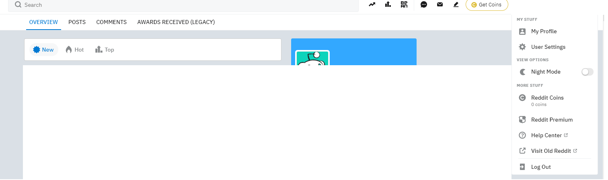

Reddit Usability Heuristics
Using Jakob Nielson's 10 Usability Heuristics, I evaluated Reddit's user interface
to see how it stacks up.
Here are the results:
- Visibility of system status - I think this is something Reddit can do better,
but they still employ some tactics discussed by Jakob Nielson. For example,
when you click the “post” button, the button changes the “post” text into a
swirling circle, similar to many websites that change the cursor to a swirling
circle when something is in progress. Since it is commonly used, it is easier
for the user to understand, and it gives feedback that the user’s input was read
and is processing. Another interaction that is clearly visible is upvoting and
downvoting. Upvotes change the arrow to be colored in orange, and downvotes
change the arrow to be colored in blue (there’s a screenshot of the orange
in another section below).
- Match between system and the real world - Each subreddit has a list of their “staff”,
or moderators. This makes it easy to see who is in charge, and they also allow users
to contact the moderators at any time for any reason, in case they have questions or
concerns. Like most companies, they have “about, careers, terms, etc.” They also have
their various policies. All of these are things people should be familiar with, as
they are used in real life as well as on most websites.
- User control and freedom - Reddit allows the user to go “back” when creating an account,
as shown in the screenshot. They also allow the user to cancel the comment or post they
are making, and can save it as a draft. Users can also delete comments or posts that
they already made, which is sort of another “undo”. These provide “emergency exits” for
the user if they slipped and chose certain functions by mistake.
- Consistency and standards - Reddit is consistent with most other social media standards,
however, they use “upvotes and downvotes” rather than “likes and dislikes”, with the latter
being the standard across many sites. This isn’t a huge deal, as it is pretty obvious even
to new users what upvoting and downvoting is. The other thing I’d point out about reddit
is it uses lots of abbreviations, which I haven’t always seen on other social media.
Fwiw (for what its worth), iirc (if i remember correctly), etc. When I first used reddit,
I had to look it up or try to guess what every abbreviation is, and maybe I’m just not
abbreviation-savvy, but this could be confusing for users, especially those who are older in age.

- Error prevention - It doesn’t seem like reddit has many confirmation checks, but they do have
one for sure: when a subreddit is listed as 18+, users must confirm they are over 18 and that
they wish to proceed. Since some subreddit names aren’t always easy to understand or type out,
this helps prevent users unknowingly going into subreddits that they may not have intended to.
It also (somewhat) prevents users below 18 from going into those subreddits too, but that is
easily circumvented by entering a birthdate that corresponds to an age over 18.
- Recognition rather than recall - Reddit has all the actions and options available to the user shown
visibly. Clicking on the user profile brings up the standard “My profile, settings, help, logout, etc…”
The same options used across almost every website, so it is already known to the user. While those
are the user options, reddit also makes it clear on how to interact with posts and comments, and
there is a screenshot further below that will show details about that, but it has buttons for every
option, with text displaying what it does when hovering over the specific button. Much like youtube
or twitter, it has likes/dislikes (upvotes/downvotes on reddit) for both posts and comments.
Saving posts or comments is an option, just like videos and tweets can be saved.

- Flexibility and efficiency of use - Reddit uses markdown as the format for writing, and while it appears
they have a new editor similar to the basic google docs or microsoft word (with buttons for bold, italics, etc),
for the experienced users on reddit it is likely easier for them to continue writing in markdown rather
than using the editor. However, the editor makes it easier for those newer to reddit and markdown, and
those who don’t want to read the whole guide on markdown
This accommodates both new and veteran users, and allows veteran users to speed up interactions using their
markdown knowledge.
- Aesthetic and minimalist design - Reddit might be the most minimalist design out of all the current social media.
Viewing posts and their comment section is extremely easy, as all the comments are laid out in an order of your
choosing (popular, hot, newest, etc), and responses to each comment form a “chain”, where each response is below
the previous and slightly indented to the left, for easier reading. The interface simply shows the username,
number of upvotes, time since it was posted, and the comment itself. There are a few ways to interact with the
comment, and some subreddits have unique designs based on their focus, but it is very easy to read and understand.
- Help users recognize, diagnose, and recover from errors - Reddit does use error codes, however they also explain
the error code meaning in plain language. 404 is a common one that almost everyone is familiar with, but there are
others that reddit uses that may not be known, so they state the error in normal terms as well. If it’s an error
such as searching a user or subreddit that doesn’t exist, it will simply let the user know “sorry, there were no
results for…” no error code even necessary. The user can use reddit’s help page for possible solutions.
- Help and documentation - Reddit has a help section that is neatly organized into categories, with more specific
questions beneath each category. The user can navigate through these options, or use the search function if they
are having trouble finding help with the standard sections. The default options are common questions that people
have, and the search function allows the user to have an easier time finding the solution to their problem, which
is likely more complex than the general questions and sections given by default.